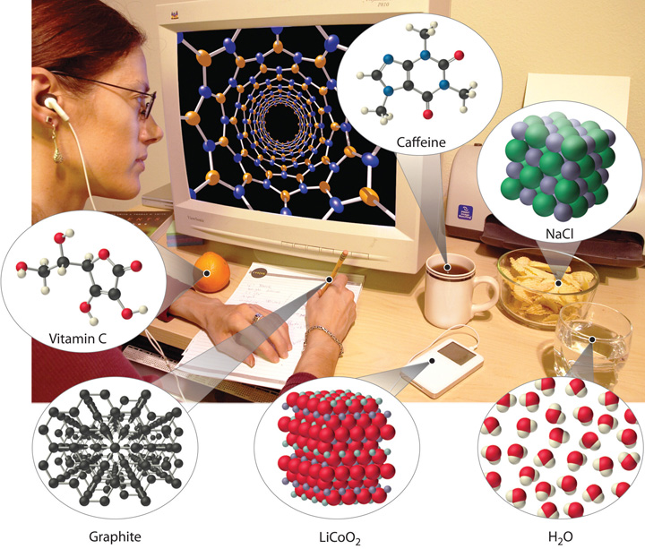
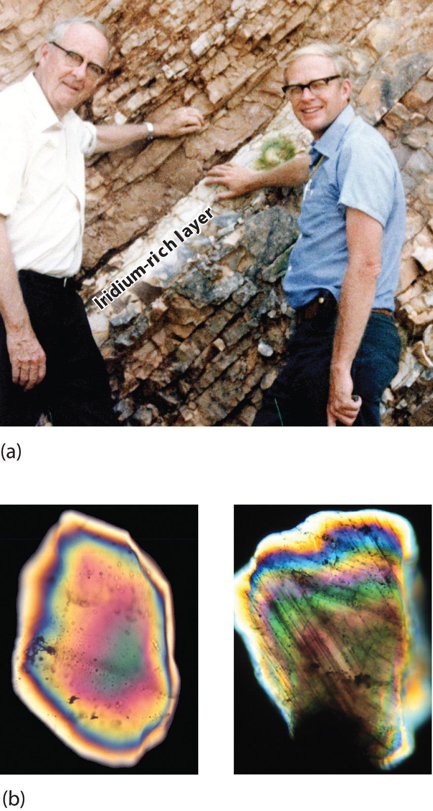
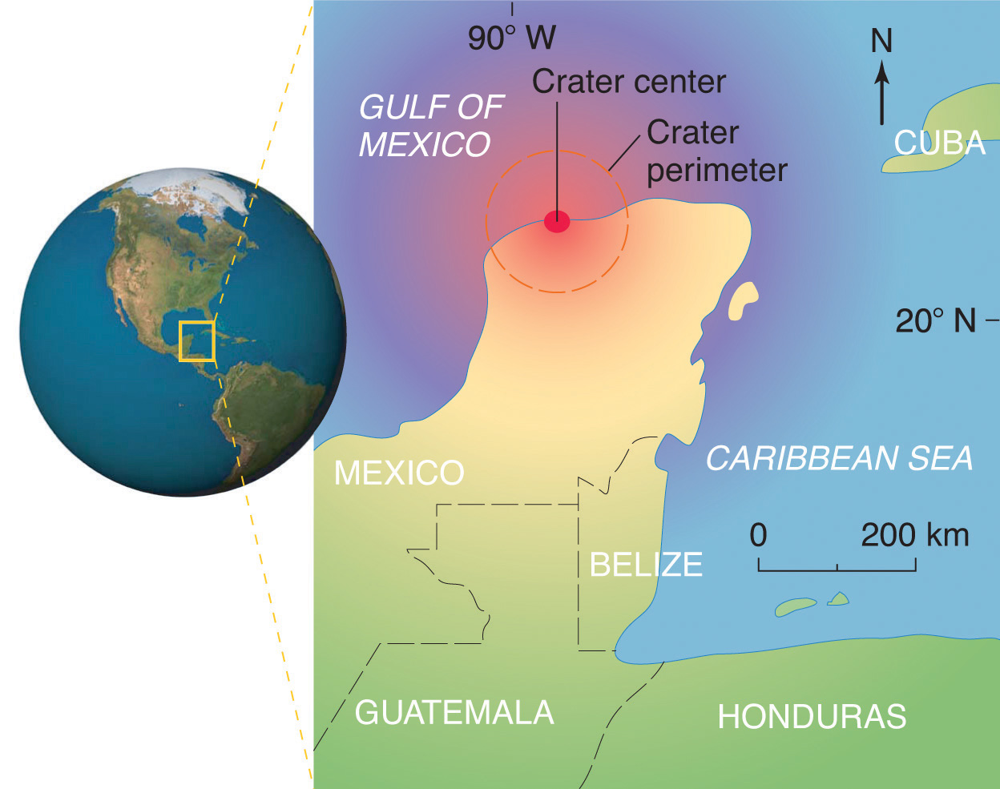

ChemistryThe study of matter and the changes that material substances undergo. is the study of matter and the changes that material substances undergo. Of all the scientific disciplines, it is perhaps the most extensively connected to other fields of study. Geologists who want to locate new mineral or oil deposits use chemical techniques to analyze and identify rock samples. Oceanographers use chemistry to track ocean currents, determine the flux of nutrients into the sea, and measure the rate of exchange of nutrients between ocean layers. Engineers consider the relationships between the structures and the properties of substances when they specify materials for various uses. Physicists take advantage of the properties of substances to detect new subatomic particles. Astronomers use chemical signatures to determine the age and distance of stars and thus answer questions about how stars form and how old the universe is. The entire subject of environmental science depends on chemistry to explain the origin and impacts of phenomena such as air pollution, ozone layer depletion, and global warming.
The disciplines that focus on living organisms and their interactions with the physical world rely heavily on biochemistryThe application of chemistry to the study of biological processes., the application of chemistry to the study of biological processes. A living cell contains a large collection of complex molecules that carry out thousands of chemical reactions, including those that are necessary for the cell to reproduce. Biological phenomena such as vision, taste, smell, and movement result from numerous chemical reactions. Fields such as medicine, pharmacology, nutrition, and toxicology focus specifically on how the chemical substances that enter our bodies interact with the chemical components of the body to maintain our health and well-being. For example, in the specialized area of sports medicine, a knowledge of chemistry is needed to understand why muscles get sore after exercise as well as how prolonged exercise produces the euphoric feeling known as “runner’s high.”
Examples of the practical applications of chemistry are everywhere (Figure 1.1 "Chemistry in Everyday Life"). Engineers need to understand the chemical properties of the substances when designing biologically compatible implants for joint replacements or designing roads, bridges, buildings, and nuclear reactors that do not collapse because of weakened structural materials such as steel and cement. Archaeology and paleontology rely on chemical techniques to date bones and artifacts and identify their origins. Although law is not normally considered a field related to chemistry, forensic scientists use chemical methods to analyze blood, fibers, and other evidence as they investigate crimes. In particular, DNA matching—comparing biological samples of genetic material to see whether they could have come from the same person—has been used to solve many high-profile criminal cases as well as clear innocent people who have been wrongly accused or convicted. Forensics is a rapidly growing area of applied chemistry. In addition, the proliferation of chemical and biochemical innovations in industry is producing rapid growth in the area of patent law. Ultimately, the dispersal of information in all the fields in which chemistry plays a part requires experts who are able to explain complex chemical issues to the public through television, print journalism, the Internet, and popular books.
Figure 1.1 Chemistry in Everyday Life
Although most people do not recognize it, chemistry and chemical compounds are crucial ingredients in almost everything we eat, wear, and use.
By this point, it shouldn’t surprise you to learn that chemistry was essential in explaining a pivotal event in the history of Earth: the disappearance of the dinosaurs. Although dinosaurs ruled Earth for more than 150 million years, fossil evidence suggests that they became extinct rather abruptly approximately 66 million years ago. Proposed explanations for their extinction have ranged from an epidemic caused by some deadly microbe or virus to more gradual phenomena such as massive climate changes. In 1978 Luis Alvarez (a Nobel Prize–winning physicist), the geologist Walter Alvarez (Luis’s son), and their coworkers discovered a thin layer of sedimentary rock formed 66 million years ago that contained unusually high concentrations of iridium, a rather rare metal (part (a) in Figure 1.2 "Evidence for the Asteroid Impact That May Have Caused the Extinction of the Dinosaurs"). This layer was deposited at about the time dinosaurs disappeared from the fossil record. Although iridium is very rare in most rocks, accounting for only 0.0000001% of Earth’s crust, it is much more abundant in comets and asteroids. Because corresponding samples of rocks at sites in Italy and Denmark contained high iridium concentrations, the Alvarezes suggested that the impact of a large asteroid with Earth led to the extinction of the dinosaurs. When chemists analyzed additional samples of 66-million-year-old sediments from sites around the world, all were found to contain high levels of iridium. In addition, small grains of quartz in most of the iridium-containing layers exhibit microscopic cracks characteristic of high-intensity shock waves (part (b) in Figure 1.2 "Evidence for the Asteroid Impact That May Have Caused the Extinction of the Dinosaurs"). These grains apparently originated from terrestrial rocks at the impact site, which were pulverized on impact and blasted into the upper atmosphere before they settled out all over the world.
Figure 1.2 Evidence for the Asteroid Impact That May Have Caused the Extinction of the Dinosaurs
(a) Luis and Walter Alvarez are standing in front of a rock formation in Italy that shows the thin white layer of iridium-rich clay deposited at the time the dinosaurs became extinct. The concentration of iridium is 30 times higher in this layer than in the rocks immediately above and below it. There are no significant differences between the clay layer and the surrounding rocks in the concentrations of any of the 28 other elements examined. (b) Microphotographs of an unshocked quartz grain (left) and a quartz grain from the iridium-rich layer exhibiting microscopic cracks resulting from shock (right).
Scientists calculate that a collision of Earth with a stony asteroid about 10 kilometers (6 miles) in diameter, traveling at 25 kilometers per second (about 56,000 miles per hour), would almost instantaneously release energy equivalent to the explosion of about 100 million megatons of TNT (trinitrotoluene). This is more energy than that stored in the entire nuclear arsenal of the world. The energy released by such an impact would set fire to vast areas of forest, and the smoke from the fires and the dust created by the impact would block the sunlight for months or years, eventually killing virtually all green plants and most organisms that depend on them. This could explain why about 70% of all species—not just dinosaurs—disappeared at the same time. Scientists also calculate that this impact would form a crater at least 125 kilometers (78 miles) in diameter. Recently, satellite images from a Space Shuttle mission confirmed that a huge asteroid or comet crashed into Earth’s surface across the Yucatan’s northern tip in the Gulf of Mexico 65 million years ago, leaving a partially submerged crater 180 kilometers (112 miles) in diameter (Figure 1.3 "Asteroid Impact"). Thus simple chemical measurements of the abundance of one element in rocks led to a new and dramatic explanation for the extinction of the dinosaurs. Though still controversial, this explanation is supported by additional evidence, much of it chemical.
Figure 1.3 Asteroid Impact
The location of the asteroid impact crater near what is now the tip of the Yucatan Peninsula in Mexico.
This is only one example of how chemistry has been applied to an important scientific problem. Other chemical applications and explanations that we will discuss in this text include how astronomers determine the distance of galaxies and how fish can survive in subfreezing water under polar ice sheets. We will also consider ways in which chemistry affects our daily lives: the addition of iodine to table salt; the development of more effective drugs to treat diseases such as cancer, AIDS (acquired immunodeficiency syndrome), and arthritis; the retooling of industry to use nonchlorine-containing refrigerants, propellants, and other chemicals to preserve Earth’s ozone layer; the use of modern materials in engineering; current efforts to control the problems of acid rain and global warming; and the awareness that our bodies require small amounts of some chemical substances that are toxic when ingested in larger doses. By the time you finish this text, you will be able to discuss these kinds of topics knowledgeably, either as a beginning scientist who intends to spend your career studying such problems or as an informed observer who is able to participate in public debates that will certainly arise as society grapples with scientific issues.
Chemistry is the study of matter and the changes material substances undergo. It is essential for understanding much of the natural world and central to many other scientific disciplines, including astronomy, geology, paleontology, biology, and medicine.